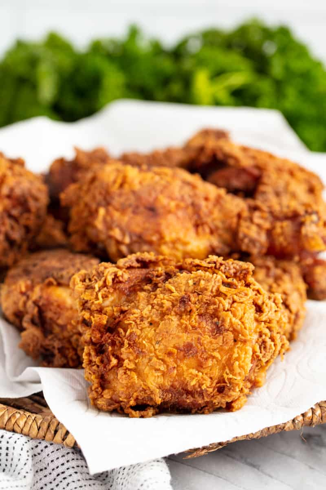

Fried Chicken
HOME

Description
Fried chicken is one of the most popular dishes around the world. It doesn't require many ingredients, and it's packed with protein and other nutrients that are beneficial for our bodies.
Ingredients
- 30 saltine crackers
- 2 tablespoons all-purpose flour
- 2 tablespoons dry potato flakes
- 1 teaspoon seasoned salt
- ½ teaspoon ground black pepper
- 1 egg
- 6 skinless, boneless chicken breast halves
- 2 cups vegetable oil for frying
Steps
- Place crackers in a large resealable plastic bag; seal bag and crush crackers with a rolling pin until they are coarse crumbs. Add the flour, potato flakes, seasoned salt, and pepper and mix well.
- Beat egg in a shallow dish or bowl. One by one, dredge chicken pieces in egg, then place in bag with crumb mixture. Seal bag and shake to coat.
- Heat oil in a deep-fryer or large saucepan to 350 degrees F (175 degrees C).
- Fry chicken, turning frequently, until golden brown and juices run clear, 15 to 20 minutes.
Nutrition Facts
- 887 Calories
- 80g Fat
- 14g Carbs
- 29g Protein